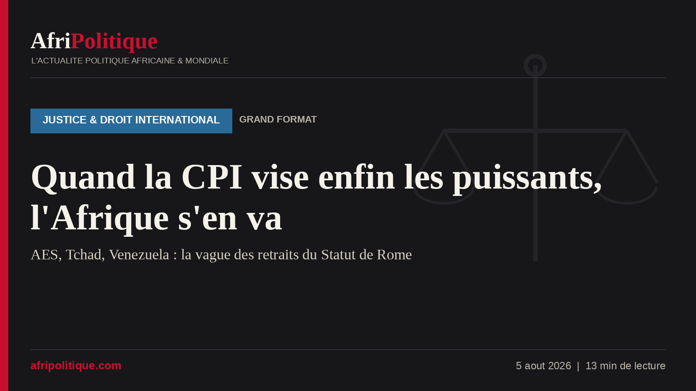

Ils emploient les mêmes mots, mais ne parlent pas de la même chose. Quand le Burkina Faso, le Mali et le Niger annoncent, le 22 septembre 2025, leur retrait « immédiat » de la Cour pénale internationale (CPI) en la qualifiant d'« instrument de répression néocoloniale aux mains de l'impérialisme », ils posent un acte doctrinal : la rupture avec un ordre judiciaire jugé occidental. Quand le Tchad notifie le sien, le 27 juillet 2026, en dénonçant une efficacité « limitée et à géométrie variable », il emprunte le même vocabulaire souverainiste, mais le fait au moment précis où une plainte vise son président à La Haye. La formule est identique. La logique, elle, diffère du tout au tout. C'est cette différence qui mérite qu'on s'y arrête, plutôt que les analyses en boucle qui saturent les réseaux sans poser les vraies questions.
La vague des retraits en bref
- 22 sept. 2025Le Burkina Faso, le Mali et le Niger (AES) annoncent leur retrait conjoint du Statut de Rome
- Juin 2026Notifications officielles de l'AES : Niger (18 juin), Burkina Faso et Mali (24 juin), effet en juin 2027
- 24 juil. 2026Le Venezuela notifie son retrait, en pleine enquête de la CPI ouverte contre lui depuis 2021
- 27 juil. 2026Le Tchad notifie son retrait, trois jours après Caracas, sur fond de plainte visant N'Djamena
- Motif AES« Instrument néocolonial » : rupture de principe, souveraineté judiciaire africaine
- Motif Tchad / Venezuela« Efficacité à géométrie variable », « biais géographique » : deux États déjà visés par une procédure
- Effet réelAucun à court terme : le retrait ne prend effet qu'un an après notification et n'efface pas les procédures en cours
Pour juger la crise, il faut d'abord rappeler d'où vient l'institution. La CPI naît du Statut de Rome, adopté le 17 juillet 1998 et entré en vigueur le 1ᵉʳ juillet 2002. Elle est la première juridiction pénale internationale permanente, chargée de poursuivre quatre crimes : génocide, crimes contre l'humanité, crimes de guerre et crime d'agression. Son principe cardinal est la complémentarité : elle n'intervient qu'en dernier recours, lorsque les justices nationales ne veulent pas ou ne peuvent pas juger. Elle est l'héritière directe de Nuremberg et des tribunaux ad hoc pour l'ex-Yougoslavie et le Rwanda, l'aboutissement d'un siècle marqué par la promesse, sans cesse trahie, du « plus jamais ça ».
Aujourd'hui, 125 États sont parties au Statut. Mais la carte des absents en dit long. Les États-Unis, la Russie, la Chine, l'Inde et Israël n'ont jamais ratifié le traité, soit trois des cinq membres permanents du Conseil de sécurité. C'est le péché originel de la Cour : elle prétend à l'universel, mais les puissances les plus armées s'en sont exemptées d'emblée. L'Afrique, à l'inverse, y a massivement adhéré : le continent compte le plus grand groupe régional d'États parties, ce qui explique aussi qu'il soit surreprésenté dans l'activité judiciaire.
La CPI en chiffres (2002–2026)
Frise AfriPolitique — Deux séries d'événements mises en regard. En haut, la vague des retraits (rouge). En bas, les mandats visant des dirigeants soutenus par les grandes puissances (bleu). Repères chronologiques indicatifs. Sources : CPI, ONU, Euronews, Franceinfo, HRW, FIDH.
Deux retraits, deux logiques qu'il faut cesser de confondreLa confusion ambiante vient de ce que l'on range sous une même étiquette des démarches de nature opposée. D'un côté, les trois États de l'Alliance des États du Sahel (AES) sont dirigés par des juntes issues de coups d'État : Ibrahim Traoré à Ouagadougou, Assimi Goïta à Bamako, Abdourahamane Tiani à Niamey. Leur retrait s'inscrit dans une trajectoire cohérente de rupture avec l'architecture héritée : sortie de la CEDEAO en janvier 2025, de l'Organisation internationale de la Francophonie en mars 2025, puis de la CPI. C'est un geste idéologique et panafricaniste, adressé autant à leurs opinions publiques qu'à l'ancienne puissance coloniale. Il ne répond, à ce stade, à aucune enquête ouverte contre leurs dirigeants à La Haye.
De l'autre, le Tchad de Mahamat Idriss Déby Itno, au pouvoir depuis la mort de son père en 2021 et confirmé par une élection contestée en 2024. Ici, le contexte change tout. Le 15 décembre 2025, l'ONG Priority Peace Sudan a saisi la CPI d'une plainte visant nommément le président tchadien et des responsables de son agence de sécurité, pour leur rôle présumé dans l'acheminement d'armes émiraties vers les Forces de soutien rapide (FSR), les paramilitaires accusés d'atrocités de masse au Darfour. Sept mois plus tard, N'Djamena claque la porte. La chronologie interdit de traiter ce retrait comme un simple écho du geste sahélien : là où l'AES rompt par doctrine, le Tchad se retire sous le poids d'une menace judiciaire précise.
Et pour bien saisir cette seconde logique, il faut lever les yeux du continent. Trois jours avant le Tchad, le 24 juillet 2026, le Venezuela a notifié à son tour un retrait « ferme et irrévocable », en dénonçant un « biais géographique » de la Cour au détriment de l'Afrique et de l'Amérique latine. Or Caracas fait l'objet, depuis 2021, d'une enquête formelle de la CPI sur des crimes contre l'humanité présumés, et le retrait est survenu juste après que le procureur a constaté l'absence de progrès dans les enquêtes nationales censées s'y substituer. Le Venezuela est ainsi le jumeau non africain du cas tchadien : un État déjà dans le viseur de la Cour qui choisit la sortie. Cette convergence sape deux discours à la fois, celui qui présente le retrait comme une pure affaire africaine et celui qui le pare des seules vertus de la souveraineté. Quand des États sous enquête quittent la même juridiction à trois jours d'intervalle, le hasard n'explique plus grand-chose.
Reste une évidence qu'aucun de ces gouvernements n'aime entendre : ce sont des régimes peu enclins à la reddition de comptes qui mènent la charge. Juntes militaires issues de coups d'État pour l'AES, pouvoir dynastique verrouillé au Tchad, État accusé de dérive autoritaire au Venezuela : tous figurent dans le bas des classements internationaux sur la liberté de la presse et l'espace civique. Le constat n'est pas un procès d'intention, mais il pèse sur la crédibilité de l'argument souverainiste. Une justice nationale indépendante, capable de juger elle-même les crimes de masse au nom de la complémentarité, suppose des contre-pouvoirs que ces régimes ont précisément affaiblis.
Quitter la Cour ne l'efface pas : ce que dit l'article 127Reste une illusion tenace, entretenue par les communiqués officiels : celle qu'un retrait mettrait les dirigeants à l'abri. Le droit dit l'inverse. L'article 127 du Statut de Rome encadre strictement la sortie. Une fois la notification déposée auprès du secrétaire général des Nations unies, l'État reste membre à part entière pendant un an. Le retrait de l'AES ne produira donc ses effets qu'en juin 2027 ; celui du Tchad, à l'été 2027. Durant tout ce délai, les obligations de coopération restent entières.
Surtout, le même article est catégorique : le retrait « ne dégage en rien l'État des obligations mises à sa charge quand il était partie », y compris financières, et n'affecte « en rien la poursuite de l'examen des affaires » que la Cour avait déjà commencé à étudier avant la date d'effet. Autrement dit : une enquête ouverte avant le retrait se poursuit ; un crime commis pendant la période d'adhésion reste justiciable de La Haye. La présidence de l'Assemblée des États parties l'a martelé en appelant les États sahéliens à revenir sur leur décision : sortir de la CPI n'est pas une amnistie. Pour un dirigeant déjà visé par une plainte, la porte de sortie se referme sur ce qui a déjà été commis.
Le cas tchadien recèle même un paradoxe que peu d'analyses relèvent. La situation du Darfour ne relève pas de la CPI parce que le Soudan y serait partie, il ne l'est pas, mais parce que le Conseil de sécurité de l'ONU la lui a déférée en 2005, par sa résolution 1593. Cette compétence ne découle donc d'aucune adhésion et ne s'éteint avec aucun retrait. Dans la mesure où les faits reprochés au Tchad, la facilitation présumée d'un ravitaillement des FSR au Darfour, se rattachent à cette situation soudanaise, quitter le Statut de Rome pourrait se révéler largement inopérant : on ne sort pas d'une compétence que l'on n'a jamais eu le pouvoir de déclencher. Le geste de N'Djamena viserait alors davantage l'opinion intérieure que les juges de La Haye.
Ici, la différence entre les deux cas devient tangible. Pour les chefs des juntes sahéliennes, contre lesquels aucune procédure internationale n'est ouverte, le risque est aujourd'hui théorique : rien ne les menace tant qu'aucune enquête ne les vise. Leur retrait est donc, juridiquement, une assurance contre l'avenir plus qu'une échappatoire au présent. Il ferme la porte à d'éventuelles saisines futures pour des faits postérieurs à juin 2027, mais laisse ouverte la fenêtre pour tout crime commis avant.
Pour Mahamat Déby, l'équation est autrement plus serrée. Si le bureau du procureur décidait d'ouvrir une enquête formelle sur la base de la plainte de décembre 2025, les faits reprochés, antérieurs au retrait, resteraient dans le champ de compétence de la Cour. Un mandat d'arrêt, s'il était un jour délivré, transformerait chaque déplacement à l'étranger en pari : les 125 États parties auraient l'obligation, au moins sur le papier, de l'arrêter. La comparaison avec Omar el-Béchir, l'ancien président soudanais visé par un mandat en 2009 et resté libre de voyager dans plusieurs pays complices de son impunité, montre les limites concrètes de ce dispositif. Mais elle montre aussi qu'un mandat pèse durablement sur une trajectoire politique : il rétrécit le monde.
« Outil néocolonial » : un procès à moitié fondéVient l'argument massue, brandi de Ouagadougou à N'Djamena : la CPI ne frappe que les faibles. Il n'est pas sans fondement, à condition de bien viser la cible. Sur près d'une dizaine de condamnations définitives prononcées depuis 2002, toutes concernent des Africains : Thomas Lubanga et Bosco Ntaganda pour la RDC, Germain Katanga, Ahmad al-Faqi al-Mahdi (destruction des mausolées de Tombouctou) et Al Hassan pour le Mali. Aucun ressortissant occidental n'a jamais été condamné à La Haye. Sur ce terrain précis, celui du bilan effectif, le sentiment d'une justice à sens unique s'enracine dans des faits, non dans un pur fantasme, et il serait malhonnête de le nier.
Mais l'argument devient trompeur dès qu'on le transporte sur le terrain des enquêtes en cours, où la géographie a radicalement changé. La Cour instruit aujourd'hui des situations en Ukraine, en Palestine, en Géorgie, au Bangladesh/Myanmar, en Afghanistan, aux Philippines et au Venezuela, en plus des dossiers africains. Des examens préliminaires touchent aussi le Nigeria et la Biélorussie. Le chiffre de « 9 enquêtes sur 13 » avancé par N'Djamena décrit un état ancien, plus une photographie du présent. Surtout, depuis 2023, la Cour a cessé de n'inquiéter que les faibles : mandat d'arrêt contre Vladimir Poutine en mars 2023 (déportation d'enfants ukrainiens), contre Benyamin Netanyahou et son ex-ministre Yoav Gallant en novembre 2024 (crimes présumés à Gaza), puis contre les chefs talibans afghans en février 2025. Ce sont des mandats d'arrêt, non des condamnations. La nuance, essentielle, est presque toujours gommée dans le débat public, mais ces décisions ont fait tomber un tabou.
Le paradoxe saute alors aux yeux. C'est précisément parce qu'elle a osé viser Moscou et Tel-Aviv que la Cour a été frappée par Washington. Reprocher à la CPI de ne s'en prendre qu'aux Africains, tout en quittant le navire au moment exact où elle commence enfin à viser les puissants, c'est déserter la réforme qu'on appelle de ses vœux. Le meilleur argument des critiques africains sérieux, et il en existe, juristes et universitaires qui ne défendent aucun dictateur, n'a jamais été « quittons la Cour », mais « rééquilibrons-la de l'intérieur ». Le retrait offre l'exact contraire : il ampute la Cour de sa base africaine au moment où elle avait le plus besoin d'alliés pour tenir tête aux grandes puissances.
Décadence de l'ONU ou fenêtre d'opportunité ?Car le calendrier n'est pas neutre. Ces départs surviennent alors que l'institution vacille sous les coups des États-Unis. Le 6 février 2025, Donald Trump a signé un décret autorisant des sanctions contre la CPI ; le procureur Karim Khan a été personnellement sanctionné, avant de se mettre en retrait en mai 2025 sur fond d'enquête interne, et une dizaine de juges et de membres du bureau ont été placés sous sanctions américaines : interdiction de territoire, blocage financier. Un an plus tard, aucun candidat ne se bouscule pour lui succéder, tant la fonction expose désormais aux représailles de Washington.
Dans ce paysage, les retraits africains prennent un relief particulier. Ils s'inscrivent dans un moment où le multilatéralisme onusien recule partout, où la montée des nationalismes (trumpisme américain, poutinisme russe, droites dures un peu partout) érode l'idée même d'une justice au-dessus des États. Les régimes de l'AES et de N'Djamena ne créent pas cette décadence : ils en profitent. Quitter la CPI coûte d'autant moins cher, symboliquement, que la première puissance mondiale l'attaque de front. Mais épouser l'aversion américaine pour la Cour, nourrie de considérations qui n'ont rien à voir avec les intérêts africains, revient à s'aligner sur un agenda étranger au nom de la souveraineté. La contradiction est réelle : on ne combat pas l'ingérence occidentale en adoptant la position occidentale la plus hostile au droit international.
Ce que perdent, d'abord, les victimesDans ce débat entre États, un acteur est presque toujours oublié : les victimes. Les organisations de défense des droits humains, comme la FIDH et Human Rights Watch, ont qualifié le retrait sahélien de « trahison à l'égard des victimes ». Dans des pays où l'appareil judiciaire national est faible, sous tutelle militaire ou tout simplement défaillant, la CPI représentait le dernier recours pour les civils pris dans les massacres du Sahel ou du Darfour. La quitter, c'est refermer cette issue de secours. Les juntes promettent en échange des « mécanismes africains de justice ». Or la Cour africaine de justice dotée d'une chambre pénale, prévue par le Protocole de Malabo de 2014, n'a jamais été ratifiée par assez d'États pour fonctionner, et prévoit une immunité pour les chefs d'État en exercice. Autant dire une justice taillée pour protéger les puissants qu'elle prétend juger.
Quel avenir pour une cour à demi désertée ?La CPI survivra à ces défections. Elle a déjà survécu au départ du Burundi en 2017 et des Philippines en 2019, sans que son existence soit menacée. Et l'effet domino n'est pas à sens unique : en Hongrie, le retrait engagé par Viktor Orbán a été stoppé net par le gouvernement de Péter Magyar, arrivé au pouvoir en 2026, qui a déposé un projet de loi pour réintégrer le traité. Une défection peut donc s'annuler avec l'alternance. Le vrai danger n'est pas quantitatif mais politique : celui d'une banalisation, où chaque dirigeant sous pression judiciaire verrait dans le retrait une routine acceptable, vidant la Cour de sa substance sans la tuer.
Pour enrayer cette érosion, plusieurs pistes reviennent chez les juristes et les défenseurs des droits. D'abord, en finir avec la géométrie variable en menant à leur terme les enquêtes visant les puissants, seule manière de démentir dans les faits l'accusation de « justice des vainqueurs ». Ensuite, réformer la gouvernance de la Cour pour donner davantage de poids aux États du Sud dans le choix des procureurs et des priorités. Enfin, renforcer réellement les capacités judiciaires nationales et régionales africaines, afin d'incarner enfin ce principe de complémentarité qui devrait être la règle.
Souveraineté ou aveu ? La question reste ouverteReste la question qui dérange, et qu'aucun communiqué officiel ne tranche : renoncer au Statut de Rome, est-ce un acte de souveraineté ou un aveu ? Les deux lectures ont leur cohérence, et il serait facile mais malhonnête de n'en retenir qu'une. Côté défenseurs du retrait, l'argument est sérieux : une cour dont le bilan judiciaire reste exclusivement africain, financée et pensée en grande partie par des puissances qui refusent elles-mêmes d'y adhérer, prête le flanc au reproche d'asymétrie. Réaffirmer une souveraineté judiciaire, investir dans des mécanismes africains, refuser d'être le seul continent où le droit international a des dents : cette revendication ne se réduit pas à une manœuvre de dictateurs, et de vrais juristes du Sud la portent de bonne foi.
Côté critiques, l'objection est tout aussi fondée : partir maintenant, c'est partir au pire moment. Au moment où la Cour vise enfin Moscou, Tel-Aviv et Kaboul ; au moment où les victimes du Sahel et du Darfour n'ont souvent pas d'autre recours ; au moment où le retrait de plusieurs États déjà sous enquête, le Tchad et le Venezuela, brouille le message souverain d'un soupçon d'intérêt personnel. Plusieurs organisations de la société civile jugent d'ailleurs la décision tchadienne « inopportune et hors contexte ». Entre ces deux lectures, ce ne sont pas les communiqués officiels qui trancheront, mais les faits à venir : la CPI mènera-t-elle jusqu'au bout ses enquêtes contre les puissants ? Les « mécanismes africains » promis verront-ils enfin le jour, et jugeront-ils vraiment les chefs d'État en exercice, eux qui en sont aujourd'hui exemptés ? La justice internationale, imparfaite et sélective, avait au moins ce mérite : obliger les puissants à regarder par-dessus leur épaule. Reste à savoir si ceux qui la quittent aujourd'hui construisent une justice meilleure, ou s'en éloignent tout simplement. Au lecteur, désormais, d'en juger.